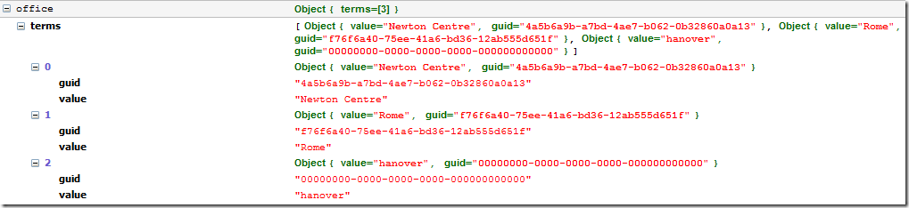

SPFindMMSPicker
Function
$().SPServices.SPFindMMSPicker
Certification

Functionality
The SPFindMMSPicker function helps you find a Managed Metadata Service (MMS) Picker's values.
Syntax
$().SPServices.SPFindMMSPicker({
MMSDisplayName: ""
});
MMSDisplayName
The DisplayName of the People Picker in the form.
Returns
The function returns an array of terms, with both the guid and the value for each term.
Example
Assume there is a MMS Picker in the form for a column named Office which allows multiple values and that it is set like so:

After the call:
var office = $().SPServices.SPFindMMSPicker({
MMSDisplayName: "Office"
});
office will be an object like this:

Note that invalid values will have the guid set to "00000000-0000-0000-0000-000000000000".